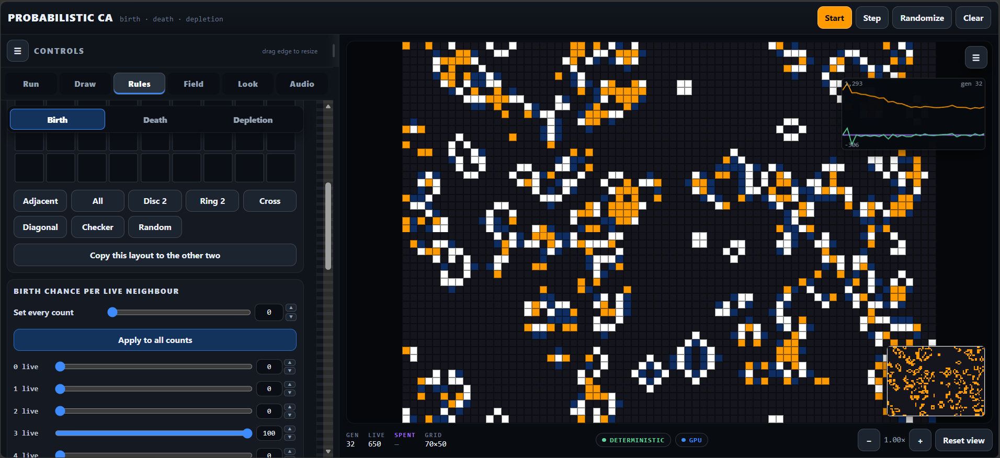
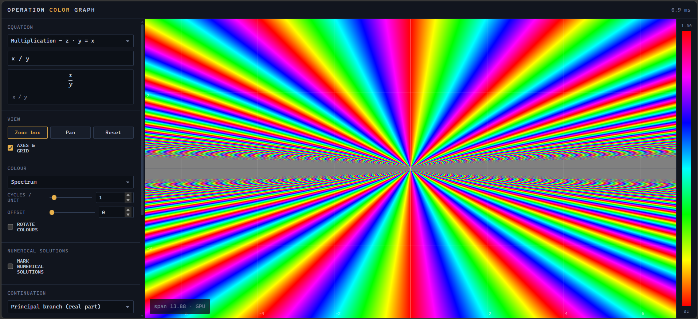

Probabilistic-Cellular-Automaton
An extended variant of Conway's Game of Life, incorporating controls for:
- Setting the probabilities of the rules for cell evolution
- Changing neighborhood configurations
- Drawing tools
- Neighborhood depletion mechanics

OpColorGraph
Have you ever taken a function, added a constant to it controled by a slider, and observed how the line changes when sliding it back and forth? Well, now you can view all the changes at the same time, with the difference represented as a shift in hue.